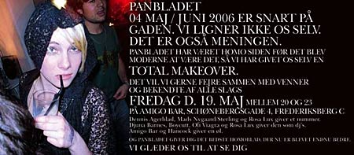

dunst Recommends:
19. Maj 2006

Panbladet - Total Makeover
Amigobar
kl. 20 - 23
Live 1 sang hver:
Dennis Agerblad,
Rosa Lux,
Mads Nygaard Sterling,
DJ's:
Djuna Barnes,
Rosa Lux,
Oli Viagra,
Boycutt
Tilbage